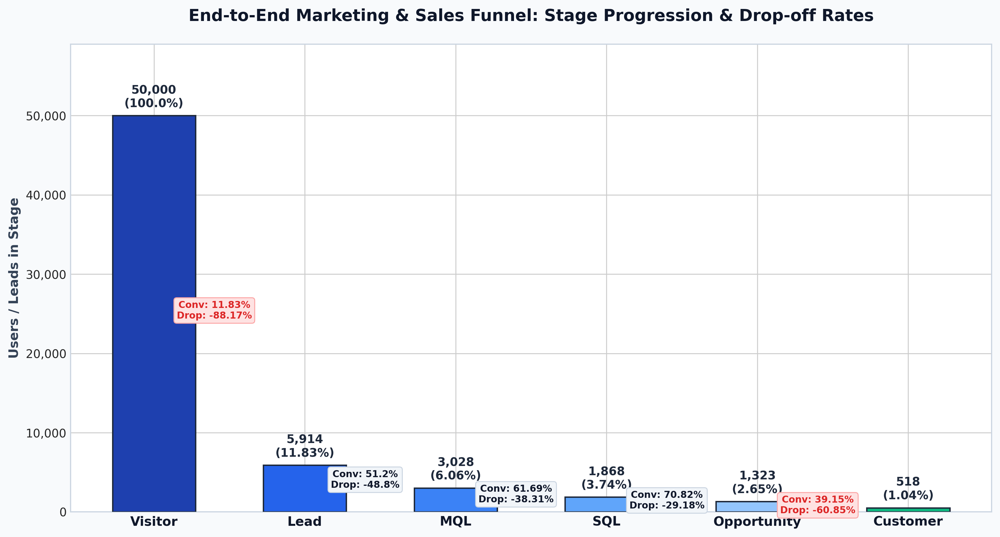
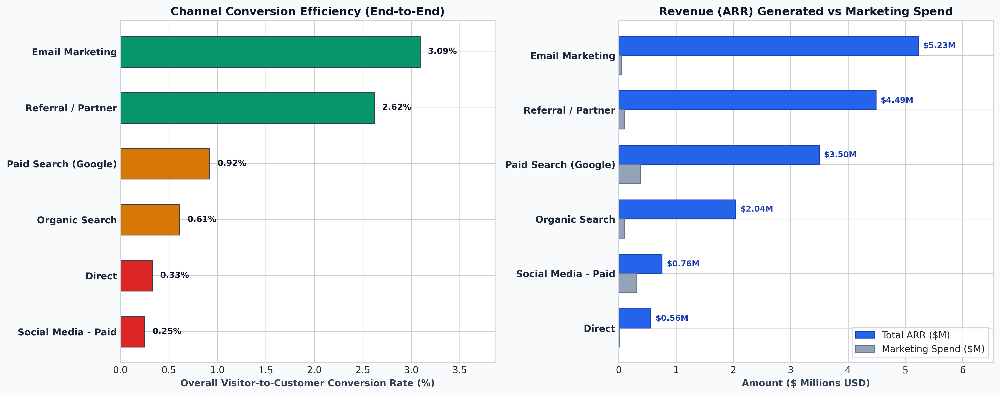
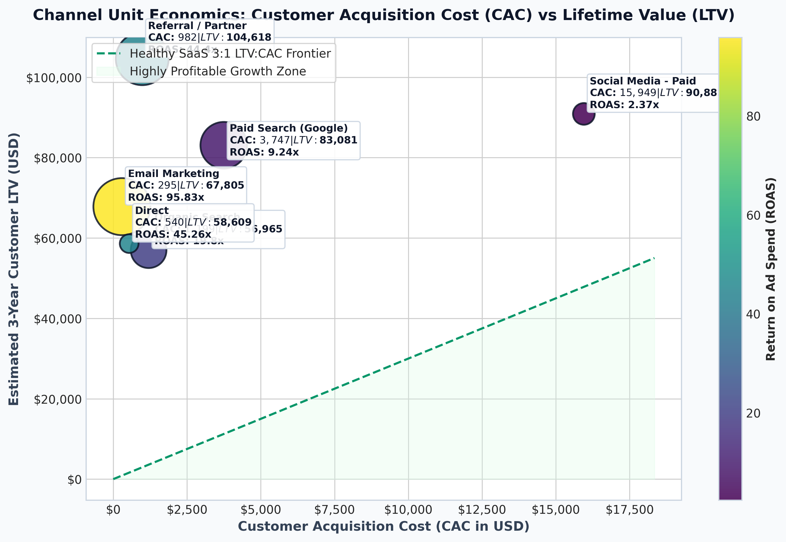
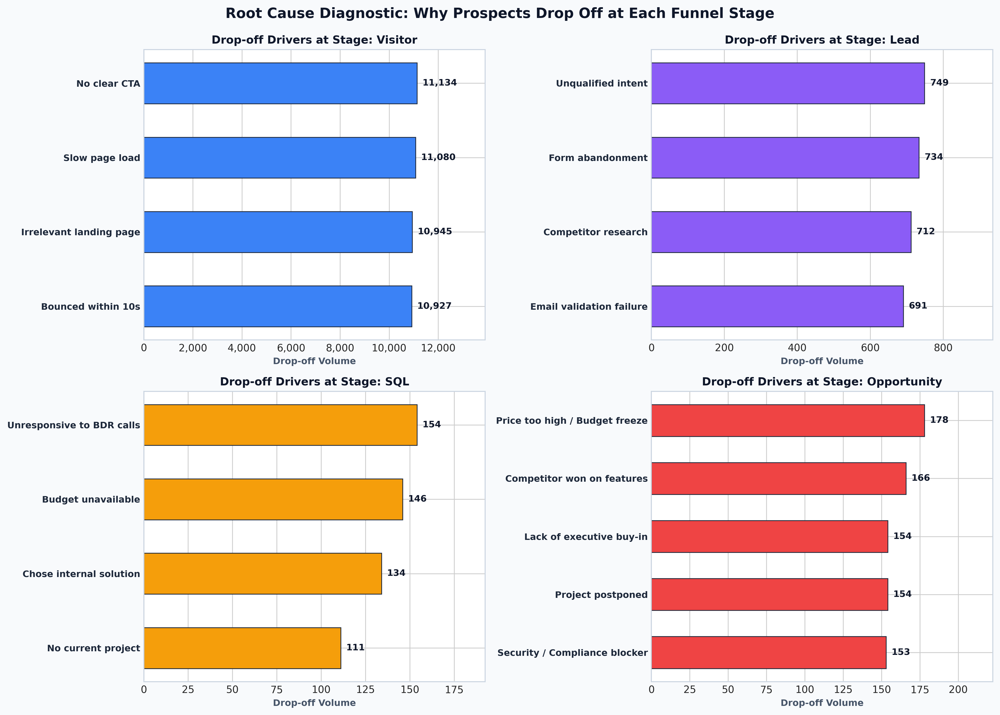
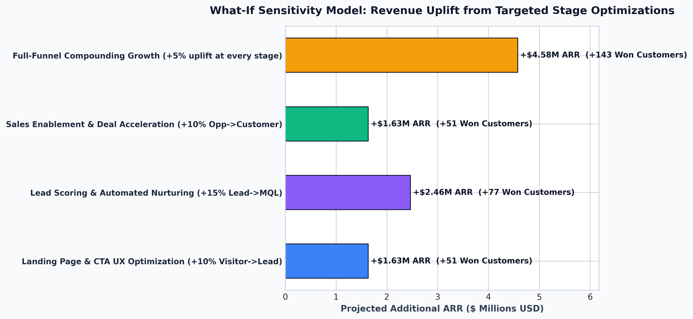

Conversion rate optimization across the marketing and sales funnel is the single highest-leverage growth driver for modern enterprises. This study analyzes an enterprise B2B SaaS marketing funnel tracking 50,000 unique prospective buyer journeys over a 12-month period across 6 acquisition channels.
The table below summarizes user progression through each milestone:
| Stage | Milestone Name | Active Count | Step Conv. (%) | Cum. Conv. (%) | Drop-off Count | Drop-off Rate (%) |
|---|---|---|---|---|---|---|
| 1 | Visitor | 50,000 | 100.00% | 100.00% | 44,086 | 88.17% |
| 2 | Lead | 5,914 | 11.83% | 11.83% | 2,886 | 48.80% |
| 3 | MQL | 3,028 | 51.20% | 6.06% | 1,160 | 38.31% |
| 4 | SQL | 1,868 | 61.69% | 3.74% | 545 | 29.18% |
| 5 | Opportunity | 1,323 | 70.82% | 2.65% | 805 | 60.85% |
| 6 | Customer | 518 | 39.15% | 1.04% | — | — |

Acquisition channel volume does not correlate with customer conversion quality or economic return:
| Marketing Channel | Visitors | Leads | Won Cust. | Traffic→Lead % | Lead→Cust % | Total ARR | CAC ($) | ROAS |
|---|---|---|---|---|---|---|---|---|
| Email Marketing | 5,983 | 1,106 | 185 | 18.49% | 16.73% | $5,226,669 | $295 | 95.8x |
| Referral / Partner | 3,932 | 641 | 103 | 16.30% | 16.07% | $4,489,873 | $982 | 44.4x |
| Paid Search (Google) | 11,016 | 1,495 | 101 | 13.57% | 6.76% | $3,496,319 | $3,747 | 9.2x |
| Organic Search | 14,037 | 1,342 | 86 | 9.56% | 6.41% | $2,041,245 | $1,199 | 19.8x |
| Direct | 6,969 | 448 | 23 | 6.43% | 5.13% | $561,672 | $540 | 45.3x |
| Social Media - Paid | 8,063 | 882 | 20 | 10.94% | 2.27% | $757,377 | $15,949 | 2.4x |



Our quantitative sensitivity model indicates that compounding modest improvements across the funnel generates extraordinary returns:
